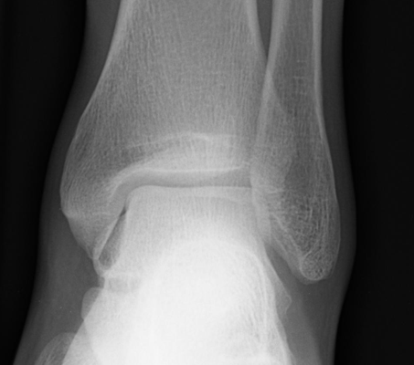
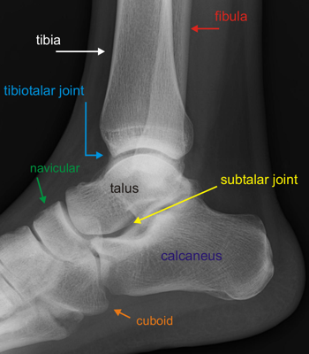
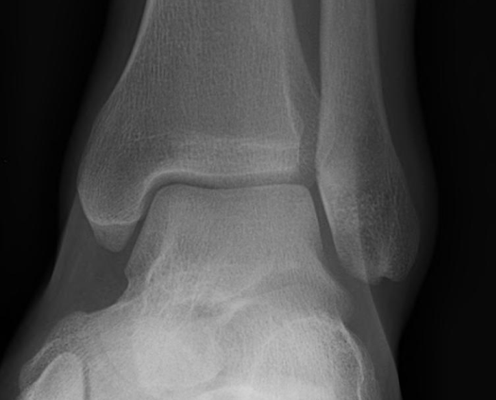

Imaging
Radiographs
- AP, lateral and mortise views of the ankle define severity of fracture

Normal AP ankle

Normal lateral ankle

Normal ankle mortise
- CT should be obtained to evaluate articular involvement and for preoperative planning
- In complex fractures that require temporizing external fixation, obtain CT after placement of the ex-fix to provide
better information regarding ligamentotaxis